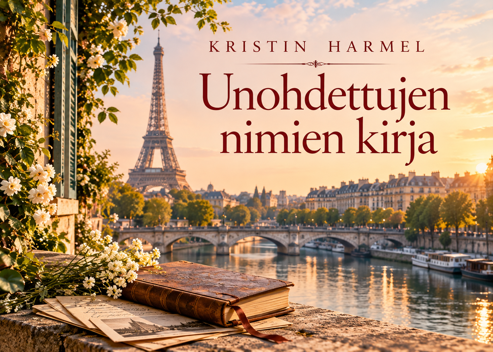
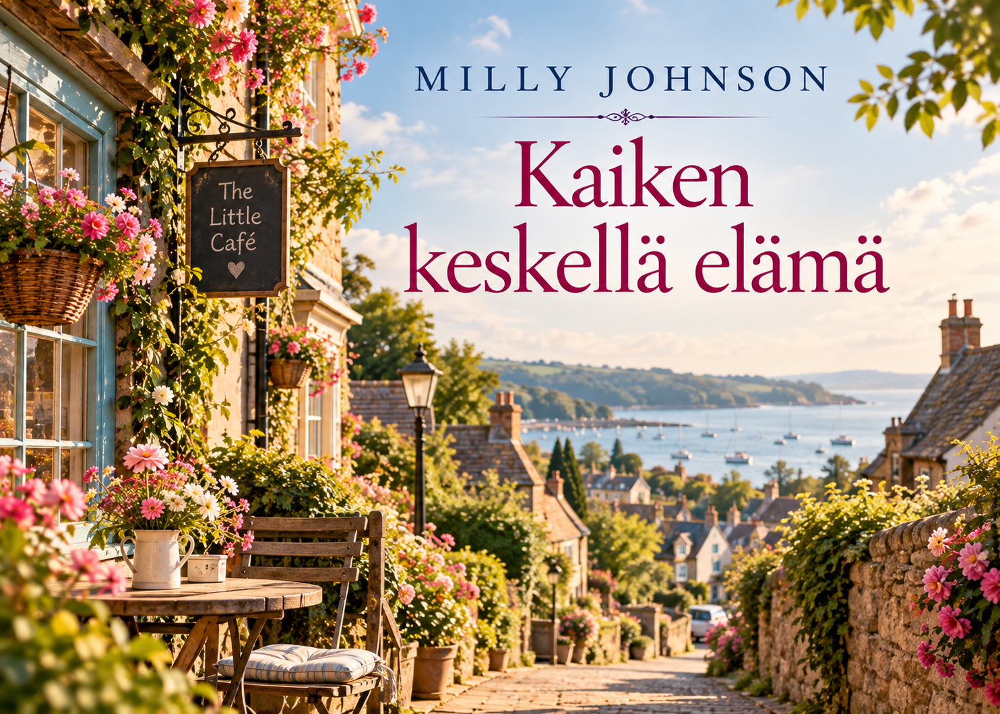
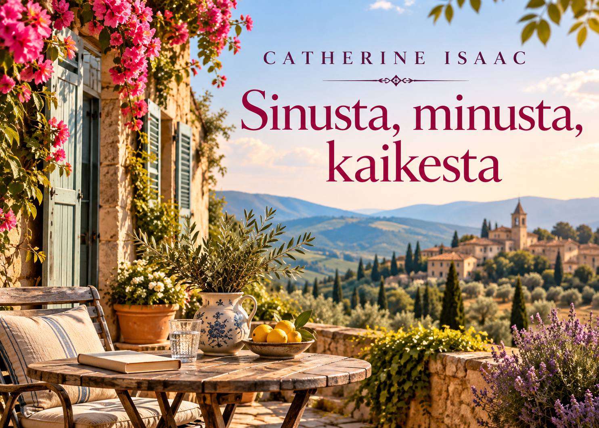
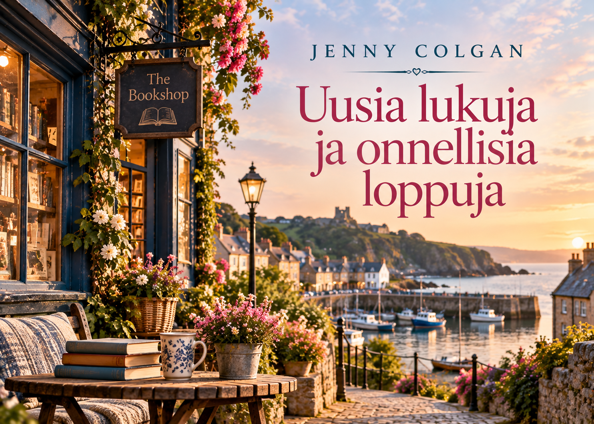

Kirjavinkkejä erilaisiin lukuhetkiin
Lucinda Rileyn suositun kirjasarjan ensimmäinen osa vie lukijan seitsemän sisaruksen ja heidän perheensä menneisyyden salaisuuksien äärelle. Tunnelmallinen tarina yhdistää historiaa, perhesuhteita ja matkustamista.
Lue lisää →
Kristin Harmelin koskettava historiallinen romaani rakkaudesta, rohkeudesta ja sodan keskellä tehdyistä vaikeista valinnoista. Tarina kuljettaa lukijaa menneisyyden ja nykyhetken välillä.
Lue lisää →
Milly Johnsonin lämminhenkinen feelgood-romaani elämästä, ystävyydestä ja yllättävistä käänteistä. Tarina muistuttaa siitä, ettei elämä aina mene suunnitelmien mukaan, ja ehkä juuri siinä piilee sen viehätys.
Lue lisää →
Catherine Isaacin lämmin ja koskettava romaani perheestä, rakkaudesta ja uusista mahdollisuuksista. Täydellinen valinta, kun kaipaat kevyttä mutta tunteikasta luettavaa.
Lue lisää →
Jenny Colganin hyvän mielen feelgood-tarina kirjoista, uusista aluista ja oman paikan löytämisestä. Lämminhenkinen valinta erityisesti silloin, kun kaipaat kevyttä ja lohdullista luettavaa.
Lue lisää →Kate Mortonin tunnelmallinen mysteeri, jossa menneisyyden salaisuudet, perhesuhteet ja vanha puutarha kietoutuvat yhteen. Sopii lukijalle, joka pitää hitaasti avautuvista arvoituksista ja vahvasta tunnelmasta.
Lue lisää →Löydä uusia luettavia kirjoja ulkoisesta kirjatietokannasta.
Kirjakeidas kokoaa yhteen kirjavinkkejä erilaisiin lukuhetkiin. Täältä voit löytää seuraavan kiinnostavan kirjan luettavaksi.